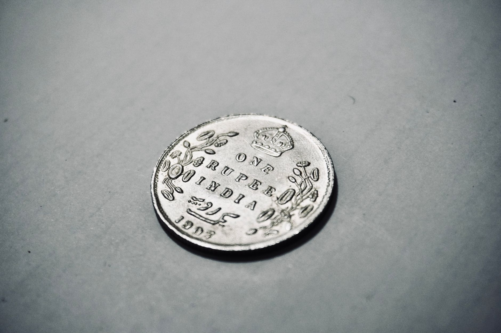

A silver IRA is a self-directed individual retirement account that holds physical silver instead of stocks or mutual funds. You get the same tax advantages as a traditional or Roth IRA, and your metal sits in an IRS-approved depository until you retire. If you want to own silver inside a tax-sheltered account, this is how it works and how to set one up.

Key Takeaways - A silver IRA holds IRS-approved physical silver in a tax-advantaged retirement structure, separate from traditional paper-asset accounts. - In 2026, you can contribute up to $7,000 per year, or $8,000 if you are 50 or older (Source: IRS Newsroom). - Silver posted record average annual prices in 2025 and global coin and bar demand rose after two straight years of decline (Source: Silver Institute). - Combined annual custodian and storage fees typically run $200 to $500 (Source: CNBC Select).
What a Silver IRA Actually Is
A silver IRA is a self-directed IRA (SDIRA) that holds physical bullion rather than paper assets. You own the metal outright. The IRS treats it the same as any other IRA. Contributions grow tax-deferred in a traditional silver IRA, or tax-free in a Roth version. At retirement age, you take distributions as cash or as the metal itself.

The difference from a regular brokerage account is that gains inside the IRA are not taxed in the year they happen. You pay taxes only on withdrawal, and even then only if you chose the traditional structure. That deferral compounds significantly over decades, especially with an asset that has posted strong price appreciation.
Not every silver product qualifies. The IRS requires a minimum purity of .999 fine silver for IRA-held metal. Approved products include American Silver Eagles, Canadian Silver Maple Leafs, silver bars from LBMA-accredited refiners, and certain silver rounds meeting purity standards. Collectibles and junk silver do not qualify.
Why the Silver Market Backdrop Matters Right Now
The numbers behind silver make this moment worth paying attention to. The silver market ran a supply deficit for a fifth consecutive year in 2025, meaning global demand exceeded mine output again (Source: Silver Institute). That structural imbalance pushed the annual average silver price to record highs in 2025 (Source: Silver Institute). Global demand for silver coins and net bars rose in 2025 after two consecutive years of decline, signaling a shift back toward physical metal ownership (Source: Silver Institute).
We stock silver at Fused Distribution and track buyer behavior closely. The people coming to us most often right now already hold stocks or crypto and want something physical outside of the traditional financial system. A silver IRA fits that exactly. It gives you tax advantages without keeping you tied to paper markets.
Equity Trust, one of the largest self-directed IRA custodians in the country, holds billions in precious metals across its accounts as of Q1 2026 (Source: Goldiew, Equity Trust Company Review, May 2026). That scale reflects how much capital has moved into physical metal through retirement accounts.
The Three Parties You Need
You cannot open a silver IRA at a regular bank or brokerage. The structure requires three separate parties.
The custodian is an IRS-approved institution that administers your account, processes contributions and distributions, and files required reporting. They do not store your metal. Popular custodians for precious metals include Equity Trust, Strata Trust, and New Direction Trust Company.
The dealer is where the silver is purchased. Your custodian places the order on your direction. We recommend using a dealer with published, transparent pricing and no high-pressure sales approach.
The depository is where the physical metal lives. IRS rules prohibit you from keeping IRA silver at home or in a personal safe deposit box. Approved depositories include Delaware Depository, Brinks Global Services, and CNT Depository. Your metal is fully insured.
The order of operations: you open and fund an account with the custodian, direct them to purchase approved silver from a dealer, and the dealer ships directly to the depository. You never touch the metal.
Step-by-Step: How to Open a Silver IRA
Most people complete this process in two to four weeks.
Step 1: Choose a custodian. Look for an SDIRA custodian that specializes in precious metals. Confirm they are licensed and bonded. Ask specifically: what are your annual fees, and how do you handle required minimum distributions in metal versus cash?
Step 2: Fund the account. You have three options. A direct contribution uses new money, subject to annual limits. A rollover moves funds from an existing 401(k) or workplace plan. A transfer moves money directly from another IRA. Rollovers and transfers have no dollar cap. In 2026, direct annual contributions cap at $7,000 if you are under 50, or $8,000 if you are 50 or older (Source: IRS Newsroom).
Step 3: Direct a purchase. Once the account has funds, you instruct the custodian to buy specific silver products from an approved dealer. Specify the product, weight, and quantity. The custodian executes the order and the metal ships to your depository.
Step 4: Confirm storage terms. Get written confirmation of your storage arrangement: segregated or commingled, which depository, and the insurance coverage per account. Segregated storage keeps your specific bars or coins separate. Commingled storage is cheaper but your individual pieces are not set aside.
Step 5: Review the full fee schedule. Annual custodian and storage fees at precious metals IRA providers typically run between $200 and $500 combined per year (Source: CNBC Select). Some custodians charge flat fees; others charge a percentage of account value. Flat-fee structures benefit larger accounts. Get the complete fee schedule in writing before signing anything.
Which Silver Products Are IRA-Eligible?
The IRS requires .999 minimum purity. Here is what we stock and recommend to IRA buyers:
American Silver Eagles are produced by the US Mint at 1 oz and .999 fine. They are one of the only coins named explicitly in IRS code. The premium is slightly higher than some alternatives, but liquidity and recognition are unmatched.
Canadian Silver Maple Leafs come in at .9999 fine from the Royal Canadian Mint. Premium runs slightly below Eagles and worldwide recognition is strong.
IRA-approved silver bars are available in 1 oz, 5 oz, 10 oz, and 100 oz from LBMA-accredited refiners such as Valcambi, PAMP Suisse, and Sunshine Minting. Lower premiums than coins, better cost per ounce at larger weights.
Qualifying silver rounds from accredited private mints can meet purity requirements, but confirm eligibility with your custodian before purchasing.
What to avoid: numismatic or collectible silver, proof sets, and pre-1965 US coins. These do not qualify and could disqualify the entire account if they end up inside it.
How the Tax Structure Works
Which structure is right depends on when you expect to pay a lower tax rate.
Traditional silver IRA contributions may be tax-deductible depending on your income and whether you also have a workplace retirement plan. You pay ordinary income taxes on distributions in retirement.
Roth silver IRA contributions are made with after-tax dollars. Qualified distributions in retirement are completely tax-free, including any appreciation in the silver price over the holding period.
Most buyers we talk to who are in their 30s and 40s lean toward the Roth structure. Their reasoning: if silver's structural supply deficit continues and prices rise further over the next two or three decades, paying taxes on a smaller contribution today and receiving a larger, fully untaxed distribution later makes strong mathematical sense.
One rule worth knowing: in a traditional silver IRA, price appreciation is taxed as ordinary income on withdrawal, not at the lower long-term capital gains rate you would pay in a taxable account. The Roth structure eliminates that problem entirely.
Frequently Asked Questions
Can I roll an existing 401(k) into a silver IRA?
Yes. A direct rollover from a 401(k), 403(b), or similar workplace plan into a self-directed IRA is allowed without taxes or penalties when done correctly. The custodian sends funds directly from your old plan to the new IRA. You never take personal possession of the money. Ask your custodian for a rollover checklist to keep the transfer clean.
Can I take physical delivery of my silver at retirement?
Yes. At age 59.5 or older, you can request an in-kind distribution. The depository ships your silver directly to you. With a traditional IRA, the fair market value on the distribution date becomes ordinary income that year. With a Roth IRA and qualified distributions, you receive the silver entirely tax-free.
What happens if the custodian goes out of business?
Your silver is held in your name at a separate depository, not on the custodian's balance sheet. If the custodian fails, you transfer the account to a new custodian and the metal is not at risk. Always confirm segregated storage so your specific bars or coins remain identifiable in the event of a transfer.
How does a silver IRA compare to a silver ETF inside a Roth brokerage account?
A silver ETF gives you price exposure through paper shares. You do not own metal. Physical silver in a self-directed IRA means you own the actual bullion, stored in your name, insured, and audited. ETFs are liquid in seconds; physical delivery from a depository takes days. For people who want the metal itself as a long-term retirement asset, not just price tracking, the physical IRA structure is the more direct path.
Opening a silver IRA involves more steps than buying a stock, but the process is clear once you have chosen a custodian and understand the fee structure. If you want to see the IRA-eligible silver products we carry and current pricing, visit our reserve page to browse available inventory before you make your first purchase.